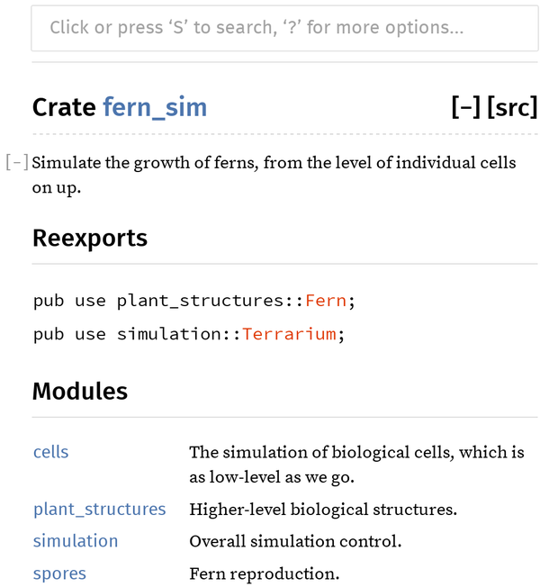

第 8 章 箱子和模块
罗伯特·奥卡拉汉，《关于 Rust 的一些思考：crates.io 和集成开发环境》
假设你正在编写一个程序，用于模拟蕨类植物的生长过程，从单个细胞的层面开始逐步扩展。你的程序就像蕨类植物一样，最初会非常简单，所有的代码可能都集中在一个文件中——这只是一个概念的雏形。随着程序的不断发展，它会逐渐拥有内部结构。不同的部分会承担不同的功能，程序会分裂成多个文件。最终，它甚至可能占据整个目录树的结构。随着时间的推移，它可能会成为整个软件生态系统中的一个重要组成部分。对于任何超过几个数据结构或几百行代码的程序来说，进行一定的组织是必要的。
这一章介绍了 Rust 中一些有助于保持程序组织性的功能：即模块和包。我们还会讨论与 Rust 包的结构和分发相关的问题，包括如何文档化和测试 Rust 代码、如何忽略不必要的编译器警告、如何使用 Cargo 来管理项目的依赖关系和版本管理、如何将在 Rust 的公共包仓库上发布的开源库进行发布、R crate.io 网站的作用、Rust 如何通过不同的语言版本进行发展等等。我们将以 fern 模拟器作为实际操作的例子来讲解这些概念。
箱子
粗糙的程序是由多个模块组成的。每个模块都是一个完整的、独立的单元：它包含了某个库或可执行程序的全部源代码，以及相关的测试代码、示例、工具、配置等附加内容。以你的蕨类植物模拟器为例，你可能会使用第三方库来处理 3D 图形、生物信息学、并行计算等问题。这些库都是以模块的形式分发的（参见图 8-1）。

图 8-1. 一个箱子及其依赖项
要了解什么是依赖包以及它们如何协同工作，最简单的方法就是使用 cargo build 标志结合 --verbose 标志来构建一个包含某些依赖项的现有项目。我们以“一个并发的曼德布罗特程序”作为示例来进行演示。结果如下所示：
$cdmandelbrot$cargoclean# delete previously compiled code$cargobuild--verboseUpdating registry `https://github.com/rust-lang/crates.io-index`Downloading autocfg v1.0.0Downloading semver-parser v0.7.0Downloading gif v0.9.0Downloading png v0.7.0... (downloading and compiling many more crates)Compiling png v0.17.14Running `.../rustc--crate-name png--edition=2018.../png-0.17.14/src/lib.rs...`...Compiling image v0.25.5Running `.../rustc--crate-name image--edition=2024.../image-0.25.5/src/lib.rs--extern png=/tmp/rustbook-test-files/mandelbrot/target/debug/deps/libpng-5661ec35ed9edb7d.rmeta...`Compiling mandelbrot v0.1.0 (/tmp/rustbook-test-files/mandelbrot)Running `.../rustc--crate-name mandelbrot--edition=2024src/main.rs...-L dependency=.../target/debug/deps--extern image=.../libimage-9e7904bb08b4f62d.rlib--extern num=.../libnum-f102695dfa84058c.rlib`Finished dev [unoptimized + debuginfo] target(s) in 16.94s$
我们重新整理了 rustc 命令行的格式，使其更易于阅读。同时，我们删除了许多与我们的讨论无关的化学编译器选项，用省略号来代替它们( ... )。
你可能还记得，当我们完成这个程序时，Mandelbrot 程序的主程序里包含了一些来自其他库模块的 use 声明。
usenum::Complex;// ...useimage::ColorType;useimage::png::PNGEncoder;
我们在`Cargo.toml`文件中还指定了想要使用每个包的版本：
[dependencies]num="0.4.3"image="0.25.10"
这里的“依赖项”指的是该项目所使用的其他软件包：我们依赖的源代码。我们在 Rust 社区的网站 crates.io 上找到了这些软件包。例如，我们通过搜索“图像库”这一关键词，就找到了 image 这个软件包。在 crates.io 上，每个软件包的页面都会提供 README.md 文件、文档链接以及源代码链接，还会有一行配置项，比如 image = "0.25.10" ，你可以将其复制并添加到你的 Cargo.toml 文件中。这里显示的版本号指的是我们编写程序时这三个软件包的最新版本。
《Cargo》的文档解释了这些信息是如何被使用的。当我们运行 cargo build 时，Cargo 首先会从 crates.io 下载指定版本的这些包的文件源代码。之后，它会读取这些包的 Cargo.toml 文件，递归下载它们的依赖项等等。例如， image 包在 0.25.10 版本中的源代码包含一个 Cargo.toml 文件，该文件中列出了对其他包的依赖，包括 gif 、 zune-jpeg 和 png 。因此，Cargo 知道在使用 image 之前，必须先下载这些包的文件。之后，我们将介绍如何让 Cargo 从 Git 仓库或本地文件系统中获取源代码，而不是从 crates.io 下载。
由于 mandelbrot 通过使用 image crate 来间接依赖这些 crate，因此我们可以将它们视为 mandelbrot 的传递依赖关系。所有这些依赖关系的集合，告诉 Cargo 应该构建哪些 crate 以及以何种顺序进行构建，这就构成了该 crate 的依赖图。Cargo 能够自动处理依赖图及传递依赖关系的问题，无疑为程序员节省了大量时间和精力。
一旦获得了源代码，Cargo 就会编译所有的模块。它会针对项目依赖图中的每一个模块运行 rustc ，即 Rust 编译器。在编译库时，Cargo 使用 --crate-type lib 选项。这一选项告诉 rustc 不要寻找 main() 函数，而是生成包含编译后代码的.rlib 文件，这些代码可以用来创建二进制文件和其他.rlib 文件。
在编译程序时，Cargo 会使用 --crate-type bin 作为标识，最终会生成目标平台的二进制可执行文件：例如在 Windows 系统下就是 mandelbrot.exe。
每执行一次 rustc 命令，Cargo 都会传递 --extern 选项参数，从而指定每个库所依赖的包文件。这样，当 rustc 遇到类似 use image::png::PNGEncoder 的代码行时，就能知道 image 是另一个库的名称。而得益于 Cargo 的支持，Rust 编译器能够知道在磁盘上哪里可以找到这个编译后的库。Rust 编译器需要访问这些.rlib 文件，因为其中包含了库的编译后的代码。Rust 会将这些代码静态链接到最终的可执行程序中。此外，.rlib 文件还包含了类型信息，这样 Rust 就可以检查代码中使用的库是否真的存在于该库中，以及我们是否正确使用了这些库。同时，.rlib 文件中还包含了库的公用内部函数、泛型代码和宏等元素，这些元素在 Rust 看到我们的使用方式之前是无法被完全编译成机器代码的。
cargo build 支持各种选项，其中大部分选项超出了本书的讨论范围。但在这里我们只需提及其中一个选项： cargo build --release 可以生成优化过的程序版本。这种版本的运行速度更快，但编译时间更长；此外，它们不会检查整数溢出问题，还会跳过 debug_assert!() 的一些断言检查。不过，它们在发生 panic 时生成的堆栈跟踪信息通常不太可靠。
版本/译本
Rust 具有极强的兼容性保证。任何在 Rust 1.0 版本上可以编译出的代码，在 Rust 1.99 版本上同样可以顺利编译，如果将来有新的版本发布，那么甚至在 Rust 1.9000 版本上也能正常运行。
不过，有时候会有一些很有趣的扩展建议，这些建议可能会导致旧的代码无法再编译。例如，在 2018 年，经过多次讨论之后，Rust 决定采用一种新的异步编程语法，该语法使用了两个新的关键字： async 和 await （详见第 20 章）。这种语言上的变化将会使得所有使用 async 或 await 作为变量名的现有代码变得无法使用。
为了在保持完全向后兼容性的同时实现这种变革，Rust 引入了版本机制。关于 Rust 版本，最重要的是要明白它们并不重要。实际上，版本只是 Rust 编译器中的一种向后兼容性选项而已。每个项目的 Cargo.toml 文件中都包含了一行代码，这段代码告诉 Cargo 应该将哪个 --edition 标志传递给 rustc 版本。
edition="2024"
对于新代码，最好使用最新版本的软件。默认情况下， cargo new 工具会基于最新版本创建新项目。本书全文采用 2024 版本的工具。
实际上，选择使用哪个版本的 Rust 语言其实并不重要。Rust 承诺，编译器会始终支持该语言的所有现有版本，而且程序可以自由地使用不同版本编写的包。甚至，一个基于 2015 年版本的包也可以依赖基于 2024 年版本的包。换句话说，一个包的版本只会影响其源代码的编译方式；在代码被编译之后，版本差异就不再重要了。这意味着没有必要为了继续参与现代 Rust 生态系统而更新旧的包。同样，也没有必要为了不给用户带来不便而让包保持旧版本的兼容性。只有当你希望在自己的代码中使用新的语言特性时，才需要切换版本。
到目前为止，这些新版本大约每三年发布一次。它们并没有以很大的声势来宣布，也没有承诺许多令人兴奋的新功能。这些新版本的重点在于那些具体的不兼容修改之处，这些修改看起来似乎都很小或者不太重要。这些修改的设计就是为了保持简洁性。小小的修改可能会为未来的语言功能带来重要的突破。
- 在 Rust 2018 版本中，新引入的这两个关键字
async和await使得 Rust 语言能够支持异步代码功能（该功能于 2023 年 12 月正式发布）。
在 Rust 2024 版本中，一些临时变量的生命周期得到了修改，从而支持了链式操作（2025 年 6 月正式支持）。- 在 Rust 2024 中，新的关键字
gen可能会在未来版本的 Rust 中启用类似 Python 风格的生成器功能。
《Rust 版指南》详细介绍了每个版本中引入的变更，并逐步指导如何将一个软件包升级到新版本。
Rust 版本
Cargo 会检查你的 Cargo.toml 文件的 [package] 部分，以确定构建你的代码所需的最低 Rust 版本：
rust-version="1.79.0"
这是为了帮助你的依赖包的下级用户。Cargo 知道自己的版本号，以及它遇到的所有依赖包的版本号。有了这些信息， cargo build 就可以提醒用户注意任何不兼容的情况。而像 cargo add 和 cargo update 这样的命令则不会尝试将依赖包的版本更新为需要更新型编译器的版本。
而 Rustup 则可以改变实际使用的 Rust 版本。如果你发布了一个支持特定最低版本的 Rust 的包，那么最好使用那个版本来测试你的代码，即使你通常使用的是最新版本的编译器。Rustup 可以轻松实现这一点，只需检查你的调用参数是否以“+”号开头，从而指定版本。例如，运行 cargo +1.79.0 test 会使用 1.79.0 版本的工具链来构建和运行测试，而运行 cargo +stable build 则会使用最新稳定的版本。
如果您希望为您的项目指定 Rust 的默认版本，可以使用项目中的任何目录下的 rust-toolchain.toml 文件来进行设置：
[toolchain]channel="nightly-2026-06-01"components=["clippy"]
channel 可以是指一个稳定的版本，比如 1.95.0 ；也可以是 Rust 的某个特定夜间构建版本；当然，它也可以只是一个通道名称，如 stable 。与 rust-version 不同的是，这些信息并不用于依赖项的解析；相反，该目录中的任何 cargo 或 rustc 命令都会自动选择指定的工具链。默认情况下，如果 Rustup 尚未安装某个工具链，它甚至会自动下载该工具链。因此，当项目的开发者们拉取 toolchain.toml 文件的更新时，他们都会自动获得 Rust 的升级。（如果觉得这种自动化程度过于强烈，可以使用 rustup set auto-install disable 来禁用此功能，然后通过 rustup toolchain install 来手动管理工具链。）
构建配置文件
在 Cargo.toml 文件中，有一些配置选项可以影响 cargo 生成的 rustc 命令行（参见表 8-1）。
| 命令行界面 | 在 cargo.toml 文件中使用了以下配置 |
|---|---|
cargo build |
[profile.dev] |
cargo build --release |
[profile.release] |
cargo test |
[profile.test] |
通常情况下，使用默认设置就足够了。不过有一个需要注意的地方：发布版本的建筑默认情况下并不会产生良好的堆栈跟踪信息。这在调试程序中的 panic 回溯情况时非常重要，或者当你需要使用性能分析工具时更是如此——这种工具可以让你了解程序在哪些地方消耗了大量的 CPU 时间。在这种情况下，你需要同时启用这两种优化（通常只在发布版本中生效）以及调试符号（通常只在调试版本中启用）。要同时实现这两点，可以在你的 Cargo.toml 配置文件中添加相关设置。
[profile.release]debug="limited"# enable some debug symbols in release builds
debug 设置用于控制 -C debuginfo 选项到 rustc 。通过这种配置，当您输入 cargo build --release 时，将会得到包含所有必要的调试符号的二进制文件，从而能够顺利进行回溯追踪和性能分析。优化设置不会受到影响。
《Cargo》文档中列出了许多可以在`Cargo.toml`文件中调整的设置。
模块
虽然模块与项目之间的代码共享有关，但模块则负责一个项目中代码的组织。它们相当于 Rust 中的命名空间，用于存放函数、类型、常量等构成你的 Rust 程序或库的元素。一个模块的结构如下所示：
modspores{usecells::{Cell,Gene};/// A cell made by an adult fern. It disperses on the wind as part of/// the fern life cycle. A spore grows into a prothallus -- a whole/// separate organism, up to 5mm across -- which produces the zygote/// that grows into a new fern. (Plant sex is complicated.)pubstructSpore{...}/// Simulates the production of a spore by meiosis.pubfnproduce_spore(factory:&mutSporangium)->Spore{...}/// Extracts the genes in a particular spore.pub(crate)fngenes(spore:&Spore)->Vec<Gene>{...}/// Mixes genes to prepare for meiosis (part of interphase).fnrecombine(parent:&mutCell){...}...}
模块是一组项的集合，这些项包括像 Spore struct 这样的命名特征，以及这个例子中的三个函数。 pub 关键字用于将某个项设为公开项，这样就可以从模块外部访问它了。
有一个函数被标记为 pub(crate) ，这意味着它可以在这个包内的任何位置使用，但不会作为外部接口的一部分被暴露出来。其他包无法使用这个函数，而且它也不会出现在这个包的文档中。
所有没有被标记为 pub 的内容都是私有的，只能在其被定义的模块中使用，或者只能用于其子模块中。
lets=spores::produce_spore(&mutfactory);// okspores::recombine(&mutcell);// error: `recombine` is private
将某个项目标记为 pub 这种行为，通常被称为“导出”该项目。
本节的其余部分介绍了一些详细信息，这些知识对于充分利用模块至关重要：
-
我们展示了如何将各个模块嵌套在一起，并根据需要将它们分布在不同的文件和目录中。
-
我们解释了 Rust 语言中用于引用其他模块中元素的路径语法，并展示了如何导入这些元素，使得你可以直接使用它们，而无需每次都写出完整的路径。
-
我们讨论了 Rust 在结构体字段上的细粒度控制功能。
-
我们引入了“序言模块”，这些模块通过整合几乎所有用户都会需要的公共功能，从而减少了不必要的重复代码。 -
我们介绍了常数和静态变量这两种定义命名值的方法，以求清晰且一致。
嵌套模块
模块可以嵌套在一起，通常还会看到一些由多个子模块构成的复合模块。
modplant_structures{pubmodroots{...}pubmodstems{...}pubmodleaves{...}}
如果你希望嵌套模块中的项能够被其他 crate 看到，请确保将该项以及所有包含它的模块标记为公开模块。否则，你可能会看到这样的警告信息：
warning: function `is_square` is never used|49 | pub fn is_square(root: &Root) -> bool {| ^^^^^^^^^
也许这个函数目前真的只是空壳代码而已。但如果你打算在其他项目中使用它，Rust 会告诉你，实际上这个函数并不会显示出来。你也应该确保包含它的模块也都处于 pub 状态。
还可以使用 pub(super) 来指定某个项仅对父模块可见，而使用 pub(in <path>) 则可以使其仅在特定的父模块及其子模块中可见。这一点在嵌套较深的模块中特别有用。
modplant_structures{pubmodroots{pubmodproducts{pub(incrate::plant_structures::roots)structCytokinin{...}}useproducts::Cytokinin;// ok: in `roots` module}useroots::products::Cytokinin;// error: `Cytokinin` is private}// error: `Cytokinin` is privateuseplant_structures::roots::products::Cytokinin;
通过这种方式，我们可以在一个源代码中编写出完整的程序，包含大量的代码以及多个相互关联的模块。这些模块可以以任意方式相互连接，而所有这些代码都集中在一个源文件中。
不过，实际上按照那种方式来操作确实很麻烦，所以还有另一种选择。
分别存储在各个文件中的模块
一个模块也可以这样编写：
modspores;
之前，我们已经包含了 spores 模块的代码，该代码被包裹在花括号中。现在，我们告诉 Rust 编译器， spores 模块位于一个单独的文件中，文件名为 spores.rs。
// spores.rs/// A cell made by an adult fern...pubstructSpore{...}/// Simulates the production of a spore by meiosis.pubfnproduce_spore(factory:&mutSporangium)->Spore{...}/// Extracts the genes in a particular spore.pub(crate)fngenes(spore:&Spore)->Vec<Gene>{...}/// Mixes genes to prepare for meiosis (part of interphase).fnrecombine(parent:&mutCell){...}
spores.rs 只包含构成该模块的所有元素。它不需要任何额外的代码来声明自己是一个模块。
这个 spores 模块与上一节中展示的版本唯一的区别在于代码的位置。关于什么是公开内容、什么是私有内容的规则，两种情况下都是完全相同的。而且，Rust 从不单独编译模块，即使这些模块存储在不同的文件中：当你构建一个 Rust crate 时，实际上是重新编译其所有模块。
一个模块可以拥有自己的目录。当 Rust 遇到 mod spores; 时，它会检查是否存在 spores.rs 和 spores/mod.rs 这两个文件；如果这两个文件都不存在，或者都存在，那么就会出错。在这个例子中，我们使用了 spores.rs 文件，因为 spores 模块没有子模块。不过，如果我们把 plant_structures 模块及其三个子模块分别拆分成独立的文件，那么最终的项目结构就会如下所示：
fern-sim/├── Cargo.toml└── src/├── main.rs├── spores.rs└── plant_structures/├── mod.rs├── leaves.rs├── roots.rs└── stems.rs
在 main.rs 文件中，我们声明了 plant_structures 这个模块：
pubmodplant_structures;
这会导致 Rust 加载 plant_structures/mod.rs 文件，该文件会声明三个子模块：
// in plant_structures/mod.rspubmodroots;pubmodstems;pubmodleaves;
这三个模块的内容分别存储在不同的文件中：leaves.rs、roots.rs 和 stems.rs，这些文件位于 plant_structures 目录中，与 mod.rs 文件一起存储。
也可以使用同名文件和目录来构成一个模块。例如，如果 stems 需要包含名为 xylem 和 phloem 的模块，我们可以把 stems 保存在 plant_structures/stems.rs 中，同时创建一个 stems 目录：
fern-sim/├── Cargo.toml└── src/├── main.rs├── spores.rs└── plant_structures/├── mod.rs├── leaves.rs├── roots.rs├── stems/│ ├── phloem.rs│ └── xylem.rs└── stems.rs
然后，在 stems.rs 中，我们声明了两个新的子模块：
// in plant_structures/stems.rspubmodxylem;pubmodphloem;
这三种选择——将模块存储在各自的文件中、将模块放在包含 mod.rs 的目录中，或者将模块与包含子模块的补充目录一起存储在各自的文件中——都为模块系统提供了足够的灵活性，能够支持你想要的几乎任何项目结构。
路径与进口
:: 运算符用于访问模块的功能。在项目的任何地方，都可以通过提供该运算符的完整路径来引用标准库中的任何功能。
ifs1>s2{std::mem::swap(&muts1,&muts2);}
std 是标准库的名称。 std 则是标准库顶层模块的路径。 std::mem 是标准库内的一个子模块，而 std::mem::swap 则是该模块中的一个公开函数。
你可以这样编写所有代码，每次需要定义一个圆形或字典时，都单独写出 std::f64::consts::PI 和 std::collections::HashMap::new 的赋值语句。不过，这种方式需要手动输入，而且阅读起来也很麻烦。另一种方法是将这些功能定义在相应的模块中，然后在需要的时候调用这些模块。
usestd::mem;ifs1>s2{mem::swap(&muts1,&muts2);}
use 声明使得 mem 在整个包含该声明的块或模块中，都作为 std::mem 的局部别名使用。
我们可以编写 use std::mem::swap; 来导入 swap 函数，而不是使用 mem 模块。不过，我们之前的做法通常被认为是最佳风格：先导入类型、特性和模块（如 std::mem ），然后通过相对路径来访问其中的函数、常量和其他成员。
usestd::collections::{HashMap,HashSet};// import bothusestd::fs::{self,File};// import both `std::fs` and `std::fs::File`.usestd::io::prelude::*;// import everything
这只是列出所有单独导入内容的简写形式：
usestd::collections::HashMap;usestd::collections::HashSet;usestd::fs;usestd::fs::File;// all the public items in std::io::prelude:usestd::io::prelude::Read;usestd::io::prelude::Write;usestd::io::prelude::BufRead;usestd::io::prelude::Seek;
你可以使用 as 来导入一个项目，但在本地时给这个项目起一个不同的名称。
usestd::io::ResultasIOResult;// This return type is just another way to write `std::io::Result<()>`:fnsave_spore(spore:&Spore)->IOResult<()>...
这些模块并不会自动继承来自父模块的名称。例如，假设我们在 proteins/mod.rs 模块中有这样的定义：
// proteins/mod.rspubenumAminoAcid{...}pubmodsynthesis;
那么，synthesis.rs 中的代码并不会自动识别类型 AminoAcid 。
// proteins/synthesis.rspubfnsynthesize(seq:&[AminoAcid])// error: can't find type `AminoAcid`...
相反，每个模块在开始的时候都是一张白纸，必须导入其所使用的名称。
// proteins/synthesis.rsusesuper::AminoAcid;// explicitly import from parentpubfnsynthesize(seq:&[AminoAcid])// ok...
默认情况下，路径都是相对于当前模块而言的：
// in proteins/mod.rs// import from a submoduleusesynthesis::synthesize;
// in proteins/mod.rs// import names from an enum,// so we can write `Lys` for lysine, rather than `AminoAcid::Lys`useself::AminoAcid::*;
或者简单地表示为：
// in proteins/mod.rsuseAminoAcid::*;
（当然，这里的 AminoAcid 示例与我们之前提到的仅导入类型、特性和模块的风格规则有所不同。如果我们的程序包含较长的氨基酸序列，那么根据奥威尔的第六条规则，这样做是合理的：“最好打破这些规则，而不是说出一些极其野蛮的事情。”）
使用相对于模块根目录的路径，而不是当前模块本身的路径，可以更轻松地在不同代码模块之间移动代码。因为即使当前模块的路径发生变化，也不会影响到所有的导入语句。例如，我们可以这样编写 synthesis.rs 文件： crate
// proteins/synthesis.rsusecrate::proteins::AminoAcid;// explicitly import relative to crate rootpubfnsynthesize(seq:&[AminoAcid])// ok...
如果你有一个模块的名字与你正在使用的 crate 名称相同，那么引用该模块的内容时需要格外小心。例如，如果你的程序在 Cargo.toml 文件中将 image crate 列为依赖项，而你的模块名为 image ，那么以 image 开头的路径就会变得模糊不清，导致歧义。
modimage{pubstructSampler{...}}// error: Does this refer to our `image` module, or the `image` crate?useimage::Pixels;
为了解决这种歧义问题，Rust 提供了一种特殊的路径类型，称为绝对路径。绝对路径以 :: 开头，它始终指向一个外部依赖包。如果要引用 Pixels 这个包中的 image 包，可以这样写：
use::image::Pixels;// the `image` crate's `Pixels`
若要引用自己模块中的 Sampler 类型，可以这样写：
useself::image::Sampler;// the `image` module's `Sampler`
模块与文件并不是同一概念，不过在某种程度上，模块可以与 Unix 文件系统中的文件和目录进行类比。 use 关键字用于创建别名，而 ln 命令则用于创建链接。路径就像文件名一样，有绝对形式和相对形式两种。 self 和 super 就像 . 和 .. 这两个特殊目录一样。
《标准序曲》
我们刚才提到，每个模块在导入外部名称时都始于“空白状态”。不过，这个“空白状态”并非完全空白。一方面，标准库 std 默认会与每个项目链接在一起，因此 std 也自动处于可用范围内。无需导入任何内容，你就可以通过完整的路径使用标准库的功能，比如 std::mem::swap 。
此外，一些特别有用的名称，如 Vec 和 Result ，被包含在标准导入语句中，并会自动被导入到代码中。在 2024 版 Rust 中，所有的模块，包括根模块，都以这样的导入语句开始：
usestd::prelude::rust_2024::*;
标准预置模块中包含数十个常用的类型、函数以及宏。如果你想查看完整的列表，可以查阅标准库文档中 std::prelude 的相关内容。
该语言的旧版本使用了略有不同的标准前奏曲。例如，在 Rust 2024 版本中，异步编程中使用的 Future 特性已经被添加到前奏曲中。
一些库会提供一个名为 prelude 的模块，这是为了让用户知道该模块应该通过 * 来导入。不过，实际上只有标准的前奏模块会自动被导入。
进行使用声明 pub
尽管 use 声明只是别名而已，但它们可以被设为公开可见：
// in plant_structures/mod.rs...pubuseself::leaves::Leaf;pubuseself::roots::Root;
这意味着 Leaf 和 Root 都是 plant_structures 模块的公开成员。它们仍然只是 plant_structures::leaves::Leaf 和 plant_structures::roots::Root 的别名而已。
标准的序言部分就是由一系列这样的 pub 导入语句构成的。
将结构字段设为公开可访问的
模块可以包含用户自定义的结构体类型，这些类型是通过使用 struct 关键字来引入的。我们将在第九章中详细讨论这一点，但现在可以顺便提一下模块是如何处理结构体字段的可见性的问题的。
一个简单的结构体如下所示：
pubstructFern{pubroots:RootSet,pubstems:StemSet,}
事实证明，与 Java 或 C++中通过类来实施访问控制相比，通过模块来实现访问控制在软件设计中其实更有帮助。这种方式可以减少大量的“getter”和“setter”方法，同时几乎完全消除了对 C++中那种声明方式的依赖。一个模块可以定义多个紧密协作的类型，比如 frond::LeafMap 和 frond::LeafMapIter ，它们可以根据需要访问彼此的私有字段，同时还能将这些实现细节隐藏起来，不暴露给程序的其余部分。
常数与静力学
除了函数、类型以及嵌套模块之外，模块还可以定义常量与静态变量。
const 关键字用于引入常量。其语法与 let 相同，不过可以加上 pub 作为标记，并且需要指定常量类型。另外， UPPERCASE_NAMES 也是表示常量的常用符号。
pubconstROOM_TEMPERATURE:f64=20.0;// degrees Celsius
static 关键字用于引入一个全局变量，不过这两者其实并不完全相同：
pubstaticROOM_TEMPERATURE:f64=68.0;// degrees Fahrenheit
没有所谓的 mut 常量。静态变量可以被标记为 mut ，但如第 5 章所讨论的，Rust 并没有办法强制执行关于静态变量独占访问的规则 mut 。因此，这些静态变量本质上是不安全的，安全代码完全不能使用它们。
staticmutPACKETS_SERVED:usize=0;println!("{PACKETS_SERVED} served");// error: use of mutable static
Rust 语言不推荐使用全局可变的状态。关于其他替代方案的讨论，请参见“全局变量”部分。
将程序转化为库资源
当你的蕨类植物模拟程序开始运行时，你意识到仅仅使用一个程序是不够的。假设你有一个命令行程序用于运行模拟并保存结果到文件中。现在，你想编写其他程序来对保存的结果进行科学分析，实时显示植物生长情况的 3D 渲染图，生成逼真的图片等等。所有这些程序都需要共享这个基本的蕨类植物模拟代码。因此，你需要创建一个库来存放这些代码。
第一步是将现有的项目分解为两部分：一个包含所有共享代码的库包，以及一个只包含现有命令行程序所需代码的可执行文件。
为了说明如何做到这一点，让我们用一个非常简化的示例程序来说明：
structFern{size:f64,growth_rate:f64,}implFern{/// Simulates a fern growing for one day.fngrow(&mutself){self.size*=1.0+self.growth_rate;}}/// Runs a fern simulation for some number of days.fnrun_simulation(fern:&mutFern,days:usize){for_in0..days{fern.grow();}}fnmain(){letmutfern=Fern{size:1.0,growth_rate:0.001,};run_simulation(&mutfern,1000);println!("final fern size: {}",fern.size);}
我们假设这个项目的`Cargo.toml`文件非常简单，没有复杂的配置。
[package]name="fern-sim"version="0.1.0"authors=["You <you@example.com>"]edition="2024"
将这个程序转化为库是非常简单的。具体步骤如下：
-
将文件 src/main.rs 更名为 src/lib.rs。 -
在 src/lib.rs 文件中，将pub关键词添加到那些将成为我们库公开功能的项目中。 -
请将
main函数移动到某个临时文件上。我们稍后会再讨论这个问题。
最终的 src/lib.rs 文件看起来是这样的：
pubstructFern{pubsize:f64,pubgrowth_rate:f64,}implFern{/// Simulates a fern growing for one day.pubfngrow(&mutself){self.size*=1.0+self.growth_rate;}}/// Runs a fern simulation for some number of days.pubfnrun_simulation(fern:&mutFern,days:usize){for_in0..days{fern.grow();}}
请注意，我们在 Cargo.toml 文件中并没有进行任何修改。因为我们的简化版 Cargo.toml 文件会让 Cargo 保持默认的行为。默认情况下， cargo build 会查看源目录中的文件，并决定需要构建什么。当它看到 src/lib.rs 文件时，就会知道需要构建一个库。
在 src/lib.rs 中的代码构成了该库的根模块。其他使用我们库的其他模块只能访问这个根模块中的公共项。
src/bin 目录
让原始的命令行程序再次运行也相当简单：Cargo 提供了一些内置的功能，可以处理那些与库文件存储在同一目录中的小型程序。
实际上，Cargo 本身就是按照这种方式编写的。大部分代码都存储在一个 Rust 库中。我们在本书中一直使用的 cargo 命令行程序其实只是一个轻量级包装程序，它将所有复杂的操作委托给那个库来完成。无论是库还是命令行程序，都存储在同一个源代码仓库中。
我们也可以将程序和库都放在同一个 crate 中。将以下代码复制到名为 src/bin/efern.rs 的文件中：
usefern_sim::Fern;fnmain(){letmutfern=Fern{size:1.0,growth_rate:0.001,};fern_sim::run_simulation(&mutfern,1000);println!("final fern size: {}",fern.size);}
main 这个函数是我们之前已经定义好的。我们还添加了一行 use 的声明，用于从 fern-sim crate 中导入 Fern 类型。在后面的代码中，我们调用了 fern_sim::run_simulation 。换句话说，我们正在使用那个 crate 作为我们的库。
因为我们将这个文件放置在了 src/bin 目录下，所以当我们再次运行 cargo build 时，Cargo 会同时编译 fern-sim 库和这个程序。我们可以使用 cargo run --bin efern 来运行 efern 程序。下面就是使用 --verbose 展示 Cargo 正在执行的命令的截图：
$cargobuild--verboseCompiling fern-sim v0.1.0 (/.../fern-sim)Running `rustc --crate-name fern-sim ... src/lib.rs ...`Running `rustc --crate-name efern ... src/bin/efern.rs ...`$cargorun--verbose--binefernFresh fern-sim v0.1.0 (/.../fern-sim)Running `target/debug/efern`final fern size: 2.7169239322355985
我们仍然不需要对 Cargo.toml 文件进行任何修改，因为 Cargo 的默认行为是自动识别源文件并自行处理相关事宜。它会自动将 src/bin 目录中的 .rs 文件视为需要构建的额外程序。
我们还可以使用子目录在 src/bin 目录下创建更大的程序。假设我们希望提供一个第二个程序，用于在屏幕上绘制蕨类植物图案，但绘制代码比较复杂且需要多个模块，因此应该将其放在一个独立的文件中。我们可以为这个第二个程序创建一个独立的子目录来存放它。
fern-sim/├── Cargo.toml└── src/└── bin/├── efern.rs└── draw-fern/├── main.rs└── draw.rs
这样的设计有一个优点，就是可以让较大的二进制文件拥有自己的子模块，而不会让库代码或 src/bin 目录变得过于拥挤。
当然，现在 fern-sim 已经成为了一个库，那么我们还有另一种选择。我们可以将这个程序放在一个独立的项目中，位于一个完全独立的目录中，并为其配置一个独立的 Cargo.toml 文件，将 fern-sim 作为依赖项进行声明：
[dependencies]fern-sim={path="../fern-sim"}
也许，将来你也会为其他类似 Fern 模拟的程序做同样的事情吧。src/bin 目录非常适合存放像 efern 和 draw-fern 这样的简单程序。
属性/特征
在 Rust 程序中，任何元素都可以被赋予属性。属性是 Rust 提供了一种通用语法，用于向编译器编写各种指令和提示。例如，假设你遇到了这样的警告：
warning: type `git_revspec` should have an upper camel case name|83 | pub struct git_revspec {| ^^^^^^^^^^^ help: convert the identifier to| upper camel case: `GitRevspec`|= note: `#[warn(non_camel_case_types)]` on by default
但是，你选择这个名字是有原因的，而且你希望 Rust 不要再谈论这件事了。你可以通过在类型上添加 #[allow] 属性来禁用这个警告。
#[allow(non_camel_case_types)]pubstructgit_revspec{...}
其他与警告相关的属性包括 #[deny] ，该属性用于将特定的警告视为错误；还有 #[expect] ，它与 #[allow] 类似，但如果在预期发生的警告没有触发时，该属性会视为错误。关键在于，如果不再需要这些属性，那么应该及时将其移除。
另一个典型的属性示例是 #[inline] ，它用于精细控制函数的内联扩展方式。
/// Adjusts levels of ions etc. in two adjacent cells/// due to osmosis between them.#[inline]fndo_osmosis(c1:&mutCell,c2:&mutCell){...}
内联是一种优化技术，我们通常愿意将其交给编译器来处理。不过，在某种情况下，内联并不会发生。当在一个包中定义的函数被另一个包中的代码调用时，除非该函数是泛型的（具有类型参数），或者明确使用了 #[inline] 标记，否则 Rust 不会进行内联操作。
一些属性，比如 #[allow] ，可以附加到整个模块上，并适用于模块中的所有内容。而另一些属性，如 #[test] 和 #[inline] ，则需要附加到具体的元素上。正如人们所预期的那样，作为一个通用的功能，每个属性都是根据需求定制设计的，并且各自拥有一组支持的参数。Rust 参考文档详细描述了所有支持的属性。
要为整个 crate 添加属性，请在 main.rs 或 lib.rs 文件的顶部添加该属性，并且使用 #! 代替 # ，如下所示：
// libgit2_sys/lib.rs#![allow(non_camel_case_types)]pubstructgit_revspec{...}pubstructgit_error{...}
#! 指令告诉 Rust，应该将某个属性附加到包含该项的对象上，而不是附加到下一个对象上。在这个例子中， #![allow] 属性是附加到整个 libgit2_sys crate 上的，而不是仅附加到 struct git_revspec 上。
例如， #![feature] 这个属性可以用来启用 Rust 语言和库中的不稳定功能。这些功能可能是实验性的，因此可能存在漏洞，或者将来可能会被修改或移除。例如，在编写这段文字的时候，Rust 已经对 f16 这个浮点类型提供了实验性支持，该类型的有限范围为正负 65,504。
#![feature(f16)]fnmain(){println!("{}",std::f16::consts::PI);// 3.14}
只有 Rust 的夜间版才会包含实验性功能，而官方稳定版本则不会提供这些功能。随着时间的推移，Rust 团队有时会将这些实验性功能稳定下来，使其成为语言的标配功能。此时， #![feature] 属性就变得多余了，Rust 会生成警告，建议用户删除该属性。
条件性编译
#[cfg] 属性用于标记那些需要条件编译的代码。这个属性可以应用于任何声明上，甚至是模块级别。
// Only include this module in the project if we're building for Android.#[cfg(target_os ="android")]modmobile;
#[cfg] 的完整语法在 Rust 参考文档中有详细说明。表 8-2 列出了最常用的选项。
#[cfg(...)] 选项 |
当启用时生效 |
|---|---|
test |
测试功能已启用（使用 cargo test 或 rustc --test 进行编译）。 |
debug_assertions |
调试断言已启用（通常在非优化版本中生效）。 |
unix |
正在为 Unix 系统编译代码，包括 macOS 平台。 |
windows |
正在为 Windows 操作系统进行编译。 |
target_pointer_width = "64" |
目标平台为 64 位处理器。另一个可能的数值是 "32" 。 |
target_arch = "x86_64" |
特别关注 x86-64 架构。其他目标值包括： "x86" 、 "arm" 、 "aarch64" 、 "powerpc" 、 "powerpc64" 、 "mips" 。 |
target_os = "macos" |
正在为 macOS 平台编译代码。其他值如下： "windows" 、 "ios" 、 "android" 、 "linux" 、 "freebsd" 、 "openbsd" 、 "netbsd" 、 "dragonfly" 。 |
名为 "robots" 的用户定义特性已启用（在编译时使用 cargo build --feature robots 或 rustc --cfg feature='"robots"' 参数）。这些特性的声明位于 Cargo.toml 文件的 [features] 部分。 |
|
A 并不满意。为了提供两种不同的函数实现，可以将其中一个标记为 #[cfg(X)] ，另一个标记为 #[cfg(not(X))] 。 |
|
A 和 B 都满意了（相当于 && ）。 |
|
满足 A 或 B 中的任意一个条件即可（相当于 || ）。 |
|
false |
永远不要这样做。这种工具可以用来注释某项内容。 |
#[cfg] 属性可以应用于函数、类型、导入语句，甚至单个代码块。
Rust 还支持一种内置宏 cfg!(...) ，当当前的构建配置满足括号内的条件时，该宏会返回 true ；否则则返回 false 。这个宏的语法与 #[cfg(...)] 属性相同。例如，如果启用了调试断言功能进行编译，那么 cfg!(debug_assertions) 就会为真。
构建环境
env!("VAR_NAME") 宏提供了一种让 Rust 框架适应构建配置的方法。它返回一个字符串，表示在编译时指定的环境变量的值。如果该变量不存在，则会引发编译错误。
在编译一个软件包时，Cargo 会生成几个有趣的环境变量。例如，要获取当前软件包的版本字符串，你可以这样写：
constMY_VERSION:&str=env!("CARGO_PKG_VERSION");
这些环境变量的完整列表可以在 Cargo 文档中找到。
option_env!("VAR_NAME") 宏与 env! 相同，两者的区别仅在于 option_env!("VAR_NAME") 返回的是一个 Option<&str> 值；如果指定的变量尚未被设置，那么 option_env!("VAR_NAME") 返回的 Option<&str> 值就等于 None 。
包含文件
还有三个内置宏，可以让您从其他文件中导入代码或数据：
include!("file.rs")-
会展开指定文件的内容，该内容必须是有效的 Rust 代码——可以是单个表达式，也可以是一系列项。 include_str!("file.txt")-
展开到包含指定文件文本的&'static str中。你可以这样使用它：constCOMPOSITOR_SHADER:&str=include_str!("../resources/compositor.glsl");如果文件不存在，或者不是有效的 UTF-8 格式，你就会遇到编译错误。
include_bytes!("file.dat")-
除了将文件视为二进制数据，而不是 UTF-8 文本之外，其余部分都是相同的。最终得到的结果是一个&'static [u8]。
和所有宏一样，这些代码也是在编译时进行处理。如果文件不存在或无法读取，那么编译就会失败。不过，这些代码在运行时是不会出问题的。无论如何，如果文件名是一个相对路径，那么它会根据包含当前文件的目录来解析。
测试与文档编制
正如我们在“编写和运行单元测试”部分所看到的，Rust 语言中内置了一个简单的单元测试框架。这些测试都是普通的函数，只是被标记为 #[test] 属性而已。
#[test]fnmath_works(){letx:i32=1;assert!(x.is_positive());assert_eq!(x+1,2);}
cargo test 会执行项目中所有的测试。
$cargotestCompiling math_test v0.1.0 (/home/jimb/rust/math_test)Finished `test` profile [unoptimized + debuginfo] target(s) in 0.49sRunning unittests src/lib.rs (target/debug/deps/math_test-dfc7...)running 1 testtest math_works ... oktest result: ok. 1 passed; 0 failed; 0 ignored; 0 measured; 0 filtered out;finished in 0.00s
（你还会看到一些关于“文档测试”的内容，我们稍后会详细介绍。）
这些测试通常会使用 Rust 标准库中的 assert! 和 assert_eq! 宏。如果 expr 的值为真，那么 assert!(expr) 就会成功执行；否则，测试将会失败。 assert_eq!(v1, v2) 与 assert!(v1 == v2) 类似，只不过当断言失败时，错误信息会同时显示两个值。
你可以将这些宏直接用于普通代码中，以检查不变量。不过请注意，即使在发布版本中， assert! 和 assert_eq! 这两个参数仍然会被包含进来。如果你想编写仅在调试版本中才会被检查的断言，可以使用 debug_assert! 和 debug_assert_eq! 这两个参数。
为了测试各种错误情况，请在你的测试中添加 #[should_panic] 属性：
/// This test passes only if division by zero causes a panic,/// as we claimed in the previous chapter.#[test]#[allow(unconditional_panic, unused_must_use)]#[should_panic(expected ="divide by zero")]fntest_divide_by_zero_error(){1/0;// should panic!}
在这种情况下，我们还需要添加 allow 属性，以告知编译器允许我们执行那些会被系统判断为会导致 panic 的操作。同时，我们还可以进行除法运算，然后直接忽略计算结果。因为通常情况下，系统会试图避免这种愚蠢的操作。
您也可以在测试中返回 Result<(), E> 。只要错误变量是 Debug ，这种情况通常都会发生，那么您可以使用 ? 来返回 Result ，从而丢弃 Ok 这个变量。
usestd::num::ParseIntError;/// This test will pass if "1024" is a valid number, which it is.#[test]fnexplicit_radix()->Result<(),ParseIntError>{i32::from_str_radix("1024",10)?;Ok(())}
那些标记为 #[test] 的函数是会根据条件进行编译的。而普通的 cargo build 或 cargo build --release 则不会执行相关测试代码。但是，当运行 cargo test 时，Cargo 会两次构建你的程序：一次是以常规方式，另一次是在启用了测试工具和测试框架的情况下。这意味着你的单元测试可以紧邻被测试的代码所在位置运行，如果需要的话，还可以访问内部的实现细节。不过，这样做并不会产生任何运行时开销。不过，这样做可能会导致一些警告。例如：
fnroughly_equal(a:f64,b:f64)->bool{(a-b).abs()<1e-6}#[test]fntest_circle_area(){letcircle=Circle::new(1.0);assert!(roughly_equal(circle.area(),std::f64::consts::PI));}
在那些省略了测试代码的构建中， roughly_equal 似乎没有被使用，而 Rust 编译器会因此发出警告：
$cargobuildCompiling math_test v0.1.0 (file:///.../math_test)warning: function `roughly_equal` is never used|7 | fn roughly_equal(a: f64, b: f64) -> bool {| ^^^^^^^^^^^^^|= note: `#[warn(dead_code)]` (part of `#[warn(unused)]`) on by default
因此，当你的测试项目变得足够重要，需要用到辅助代码时，应该将它们放在一个 tests 模块中，并使用 #[cfg] 属性声明该模块仅为测试用途而设计。
#[cfg(test)]// include this module only when testingmodtests{usesuper::*;// import everything from the enclosing modulefnroughly_equal(a:f64,b:f64)->bool{(a-b).abs()<1e-6}#[test]fncircle_area(){letcircle=Circle::new(1.0);assert!(roughly_equal(circle.area(),std::f64::consts::PI));}}
Cargo 工具本身并不支持自动或随机生成测试的功能，但有一些社区项目已经非常有效地实现了这一功能。
-
rstest这个框架提供了一种简单的方法，可以针对相同的代码测试多种不同的输入情况，系统会自动生成每种输入组合对应的单独测试案例。 -
proptest这个框架支持基于属性的测试方式，能够自动生成并优化测试用例，这些测试用例是根据一些通用属性来设计的，比如“0 到 100 之间的任意数字”或者“任何有效的String”。 -
《Rust 模糊测试指南》介绍了如何使用cargo-fuzz和afl.rs来进行模糊测试。该方法通过生成随机输入来测试软件的安全性和稳定性，从而发现可能存在的安全漏洞。
Rust 的测试框架使用多个线程来同时运行多个测试，这是你的 Rust 代码默认具备线程安全性的一个好处。如果你想禁用这一功能，可以单独运行一个测试，或者运行 cargo test -- --test-threads 1 。其中， -- 会确保 cargo test 能够将 --test-threads 选项传递给测试程序。因此，从技术上讲，我们在第二章中展示的 Mandelbrot 程序并不是该章节中的第二个多线程程序，而是第三个！在“编写和运行单元测试”部分中运行的 cargo test 才是该章节中的第一个多线程程序。
通常，测试框架只会显示那些失败的测试的结果。要显示通过测试的结果，请运行 cargo test -- --nocapture 。
集成测试
你的蕨类植物模拟程序仍在不断发展。你决定将所有主要功能封装到一个库中，以便多个可执行程序可以共享使用。如果有一些测试能够像最终用户那样与这个库协同工作就更好了，这时候就可以使用 fern_sim.rlib 作为外部依赖库。此外，还有一些测试需要加载从二进制文件中保存的模拟数据，而将这些大型测试文件放在 src 目录下确实有点麻烦。集成测试可以帮助解决这两个问题。
集成测试是位于项目源目录下的.rs 文件。当运行 cargo test 时，Cargo 会将这些集成测试编译为独立的模块，这些模块会与你的库以及 Rust 测试框架进行链接。以下是一个示例：
// tests/unfurl.rs - Fiddleheads unfurl in sunlightusefern_sim::Terrarium;usestd::time::Duration;#[test]fntest_fiddlehead_unfurling(){letmutworld=Terrarium::load("tests/unfurl_files/fiddlehead.tm");assert!(world.fern(0).is_furled());letone_hour=Duration::from_secs(60*60);world.apply_sunlight(one_hour);assert!(world.fern(0).is_fully_unfurled());}
cargo test 命令可以同时执行单元测试和集成测试。如果想要仅对特定文件中的集成测试进行运行，例如 tests/unfurl.rs 文件，可以使用命令 cargo test --test unfurl 。
文档资料
该命令 cargo doc 可以为你的库创建 HTML 文档：
$cargodoc--no-deps--openDocumenting fern-sim v0.1.0 (file:///.../fern-sim)
--no-deps 选项告诉 Cargo 仅生成关于 fern-sim 本身的文档，而不生成所有依赖库的文档。
--open 选项告诉 Cargo 工具在之后在您的浏览器中打开相关文档。
你可以在图 8-2 中看到结果。新生成的文档文件被保存在 target/doc 目录下。首页的地址是 target/doc/fern_sim/index.html。

图 8-2. 由 rustdoc 生成的文档示例
这些文档是由你的库中的 pub 功能生成的，同时还包括了你附加的所有文档注释。我们已经在这个章节中看到了一些文档注释。它们看起来就像普通的注释一样：
/// Simulates the production of a spore by meiosis.pubfnproduce_spore(factory:&mutSporangium)->Spore{...}
但是，当 Rust 遇到以三个斜杠开头的注释时，它会将其视为 #[doc] 属性。Rust 对前面的例子也是采用同样的处理方式。
#[doc ="Simulates the production of a spore by meiosis."]pubfnproduce_spore(factory:&mutSporangium)->Spore{...}
同样，以 //! 开头的注释会被视为 #![doc] 属性，并会附加到包含它们的模块或包上。例如，你的 fern_sim/src/lib.rs 文件可能会这样开头：
//! Simulates the growth of ferns, from the level of//! individual cells on up.
文档注释的内容采用 Markdown 格式进行表示，这是一种易于学习的 HTML 简写方式。本章的其余部分假设读者已经熟悉 Markdown 格式。网络上有许多不错的教程可以参考。
在 Rust 语言中，文档注释的一个特殊特点是，Markdown 链接可以使用 Rust 项目的路径来表示所指向的内容，比如使用 leaves::Leaf 这样的格式，而不是简单的 URL。Cargo 工具会将其替换为正确文档页面中的链接。例如，这段代码生成的文档会指向 VascularPath 、 Leaf 和 Root 对应的文档页面。
/// Creates a [`VascularPath`] which represents the path of nutrients/// from the given [`Root`][r] to the given [`Leaf`](leaves::Leaf).////// [r]: roots::Rootpubfntrace_path(leaf:&leaves::Leaf,root:&roots::Root)->VascularPath{...}
你可以使用 `backticks` 在运行中的文本中间插入代码片段。在输出结果中，这些代码片段会以固定宽度的字体显示。如果想要显示更长的代码样本，可以通过缩进四个空格来实现。
/// A block of code in a doc comment:////// if samples::everything().works() {/// println!("ok");/// }
您也可以使用 Markdown 格式的缩进代码块。这种方式的效果与常规缩进相同：
/// Another snippet, the same code, but written differently:////// ```/// if samples::everything().works() {/// println!("ok");/// }/// ```
无论你使用哪种格式，当你在文档注释中插入一段代码时，就会发生一件有趣的事情：Rust 会自动将这段代码转化为测试代码。
文档测试
当你在一个 Rust 库工程中运行测试时，Rust 会检查文档中描述的每一段代码是否能够真正执行并发挥作用。为此，Rust 会将文档注释中的每一段代码都编译成一个独立的可执行程序，然后将其与你的库链接在一起，最后进行运行测试。
这是一个独立的文档测试示例。通过运行 cargo new --lib ranges 来创建一个新的项目（ --lib 标志告诉 Cargo 这是一个库项目，而不是可执行程序项目），然后将以下代码添加到`src/lib.rs`文件中：
usestd::ops::Range;/// Returns true if two ranges overlap.////// assert_eq!(ranges::overlap(0..7, 3..10), true);/// assert_eq!(ranges::overlap(1..5, 101..105), false);////// If either range is empty, they don't count as overlapping.////// assert_eq!(ranges::overlap(0..0, 0..10), false);///pubfnoverlap(r1:Range<usize>,r2:Range<usize>)->bool{r1.start<r1.end&&r2.start<r2.end&&r1.start<r2.end&&r2.start<r1.end}
在文档注释中出现的这两小段代码，实际上出现在了由 cargo doc 生成的文档中，如图 8-3 所示。

图 8-3. 文档中标注的一些文档测试结果
它们也变成了两个独立的测试：
$cargotestCompiling ranges v0.1.0 (/home/jimb/rust/ranges)...Doc-tests rangesrunning 2 teststest src/lib.rs - overlap (line 5) ... oktest src/lib.rs - overlap (line 10) ... oktest result: ok. 2 passed; 0 failed; 0 ignored; 0 measured; 0 filtered out;finished in 0.29s
如果你在 Cargo 中传递 --verbose 标志，你会看到它实际上使用了 rustdoc --test 来执行这两个测试。 rustdoc 则将每个代码示例存储在不同的文件中，并添加了一些样板代码，从而生成了两个程序。这是第一个程序的示例：
useranges;fnmain(){assert_eq!(ranges::overlap(0..7,3..10),true);assert_eq!(ranges::overlap(1..5,101..105),false);}
这是第二个：
useranges;fnmain(){assert_eq!(ranges::overlap(0..0,0..10),false);}
如果这些程序能够成功编译并运行，那么测试就通过。
这两个代码示例中包含了断言语句，不过之所以如此，只是因为在这种情况下，这些断言确实能很好地为代码提供文档支持。文档测试的目的是不是把所有的测试都写在注释里。相反，我们应该编写尽可能完善的文档，而 Rust 会确保文档中的代码示例能够实际编译并运行。
通常，一个基本可用的示例会包含一些细节，比如导入语句或初始化代码等，这些部分虽然对代码的编译是必要的，但不足以在文档中展示。要隐藏某行代码样本，可以在该行的开头加上 # ，然后接一个空格：
有时候，在文档中展示完整的示例程序会很有帮助，其中包括某个 main 函数。显然，如果这些代码出现在你的示例代码中，你并不希望 rustdoc 自动将它们添加到代码中。否则，代码将无法编译。因此， rustdoc 会将任何包含字符串 fn main 的代码块视为一个完整的程序，而不会对其进行任何处理。
对于特定的代码块，可以禁用测试功能。如果你想让 Rust 编译你的示例代码，但不实际运行它，可以使用带有 no_run 注释的包围代码块来实现这一点。
/// Uploads all local terrariums to the online gallery.////// ```no_run/// let mut session = fern_sim::connect();/// session.upload_all();/// ```pubfnupload_all(&mutself){...}
如果这段代码完全不是 Rust 语言编写的代码，那么可以使用语言名称来标识它，例如使用 c++ 或 sh 来表示普通文本；而 text 则用于表示不期望编译的 Rust 伪代码。 rustdoc 并不认识数百种编程语言的名称，因此它会将任何无法识别的注释视为表示这段代码不是用 Rust 编写的。这样一来，代码的高亮显示功能以及文档测试功能就会被禁用。
指定依赖关系
我们已经找到了一种方法来指定项目依赖的包如何获取源代码：通过版本号来进行标识。
image="0.25.10"
有几种方式可以指定依赖关系，而且在一些细节上，你可能需要明确说明应该使用哪个版本，因此值得花一些篇幅来讨论这个问题。
首先，你可以考虑使用那些完全不在 crates.io 上发布的依赖库。实现这一点的一种方法就是指定一个 Git 仓库的 URL 和版本号。
image={git="https://github.com/image-rs/image.git",rev="c708281"}
这个特定的目录是开源的，托管在 GitHub 上。不过，你也可以轻松地指向企业网络中某个私有的 Git 仓库。如这里所示，你可以指定要使用的特定修订版本 rev 、 tag 或 branch 。（这些都是告诉 Git 要下载哪个版本的源代码的方法。）
另一个方法是指定一个包含该软件包源代码的目录：
image={path="vendor/image"}
能够如此灵活地控制你的依赖项真是非常强大的功能。如果你觉得所使用的任何开源包都不符合你的需求，你可以很容易地将其克隆：只需在 GitHub 上点击“克隆”按钮，然后修改一下你的 Cargo.toml 文件中的一行代码即可。之后，你的应用程序将无缝地使用你克隆的版本，而不是官方版本。
版本
当你在 Cargo.toml 文件中写入类似 image = "0.25" 这样的内容时，Cargo 会相当宽松地解释这一声明。Cargo 会采用与版本 0.25 兼容的最新版本的 image 来进行处理。
这些兼容性规则是基于语义版本控制的原理来制定的。
-
以 0.0 开头的版本号表示该版本非常原始，Cargo 系统从不认为它与任何其他版本兼容。
-
以 0.x 开头的版本号，其中 x 为非零数字，被认为与 0.x 系列的其他版本是兼容的。我们指定了image版本为 0.25，但如果可用，Cargo 则会使用 0.25.5 版本。（不过，这并不是语义版本规范对于 0.x 版本号的规定，但这一规则因其实用性而被保留下来。） -
当一个项目达到 1.0 版本后，只有新的主要版本才会导致兼容性问题。所以，如果你要求 2.0.1 版本，Cargo 可能会使用 2.17.99 版本，而不会使用 3.0 版本。
不过，不同的项目在依赖关系和版本管理方面有着各自的需求。你可以使用特定的运算符来指定具体的版本或版本范围，如表 8-3 所示。
| Cargo.toml 文件的第几行 | 含义/意思 |
|---|---|
image = "=0.10.0" |
仅使用版本为 0.10.0 的软件版本。 |
使用 1.0.5 或更高版本（如果有的话，甚至 2.9 版本也是可以的）。 |
|
image = ">1.0.5 <1.1.9" |
使用版本号高于 1.0.5 但低于 1.1.9 的版本。 |
image = "<=2.7.10" |
可以使用截至 2.7.10 版本的任意版本。 |
另一个常见的版本指定方式是使用通配符 * 。这种写法告诉 Cargo，任何版本都可以使用。除非其他 Cargo.toml 文件中包含了更具体的约束条件，否则 Cargo 会使用最新可用的版本。更多关于版本指定的详细信息，可以参考 doc.crates.io 上的 Cargo 文档。
请注意，兼容性规则意味着版本号的选定并非仅仅出于营销目的。这些版本号确实具有实际意义，它们实际上是该软件包的管理者与其用户之间达成的一种约定。如果你维护着一个版本为 1.7 的软件包，而你想移除某个功能或做出其他不符合向后兼容性的更改，那么你必须将版本号升级到 2.0。如果你将其命名为 1.8，那么就意味着新版本与 1.7 版本是兼容的，但你的用户可能会遇到构建错误的问题。
Cargo.lock
在 Cargo.toml 文件中，版本号的设计是故意保持灵活的。不过，我们并不希望每次构建时 Cargo 都会自动将我们升级到最新版本的库文件。想象一下，在紧张的调试过程中，突然 cargo build 将你升级到某个新版本的库文件，这可能会带来极大的干扰。在调试过程中发生任何变化都是不好的情况。实际上，当涉及到库文件时，根本没有任何时候适合进行意外的更新。
因此，Cargo 内置了一种机制来防止这种情况的发生。在首次构建项目时，Cargo 会生成一个 Cargo.lock 文件，该文件记录了项目中所有依赖库的精确版本。后续构建时，Cargo 会参考这个文件，继续使用相同的版本。只有当您明确指示 Cargo 进行升级时，Cargo 才会升级到新版本——这可以通过手动修改 Cargo.toml 文件中的版本号，或者运行 cargo update 命令来实现。
$cargoupdateUpdating registry `https://github.com/rust-lang/crates.io-index`Updating libc v0.2.7 -> v0.2.11Updating png v0.4.2 -> v0.4.3
cargo update 只会升级到与 Cargo.toml 文件中指定版本兼容的最新版本。如果你指定了 image = "0.25.1" ，并且想要升级到 0.26.0 版本，那么你需要修改 Cargo.toml 文件中的相关配置。下次构建时，Cargo 会使用新的 image 库版本，并将新的版本号保存在 Cargo.lock 文件中。
前面的例子展示了如何让 Cargo 更新存储在 crates.io 上的两个 crate。类似的情况也发生在存储在 Git 中的依赖库上。假设我们的 Cargo.toml 文件包含以下内容：
image={git="https://github.com/image-rs/image.git",branch="main"}
cargo build 如果检测到存在 Cargo.lock 文件，它将不会从 Git 仓库中提取新的更改。相反，它会读取 Cargo.lock 文件，并使用与上次相同的版本。不过， cargo update 会从 main 处提取更新版本的内容，这样我们的下一次构建就能使用最新的版本。
Cargo.lock 会自动生成，通常无需手动编辑它。不过，你还是应该将 Cargo.lock 提交到版本控制系统中，这样你的版本控制历史记录就能同时包含依赖项的更新情况以及代码的变化。这一点在构建可执行文件时特别重要，或者当你的项目是共享库时（即生成的文件是.dll、.dylib 或.so 格式），因为每次构建代码时都会使用 Cargo.lock 文件，从而确保构建过程的稳定性。如果你的项目只是一个普通的 Rust 库，那么你的下游用户所拥有的 Cargo.lock 文件会包含他们所有依赖项的版本信息；他们可以忽略你库对应的 Cargo.lock 文件。即便如此，将你的 Cargo.lock 文件提交到版本控制系统中仍然很有意义。在版本控制系统中使用锁定文件，使得持续集成管道和工具如 git bisect 变得更加易于使用。因为这样可以确保代码总是使用与最初编写时相同的依赖项进行构建。
Cargo.toml 中的灵活版本指定功能使得在项目中轻松使用 Rust 库成为可能，同时还能提高不同库之间的兼容性。Cargo.lock 的跟踪机制则确保了在不同机器上构建时结果的稳定性与可重复性。这两者结合起来，大大有助于避免依赖问题带来的困扰。
构建脚本
Cargo 允许你通过构建脚本为构建过程添加任何你想要的逻辑。在编译你的项目之前，Cargo 会检查项目根目录中是否存在一个名为 build.rs 的文件。如果存在的话，它会先编译并运行该文件。例如，这个构建脚本可以将当前 Git 提交哈希值作为环境变量提供给程序使用（可以通过 env!() 来读取该变量）。
usestd::process::Command;fnmain(){letoutput=Command::new("git").args(["rev-parse","HEAD"]).output().unwrap();letcommit_hash=String::from_utf8(output.stdout).unwrap();println!("cargo::rustc-env=COMMIT_HASH={commit_hash}");}
在这种情况下，Cargo 会在构建脚本的输出中看到 cargo::rustc-env 这一行，并在构建过程中设置相应的环境变量。你可以在 Cargo 文档中找到所有可用的配置命令列表。
构建脚本可能会比这里展示的要复杂得多，其中包括实时生成 Rust 代码，以及调用数据库和 Web API 等操作。例如， prost crate 这个包就使用了构建脚本来根据 Protocol Buffers 格式生成 Rust 代码。许多依赖于 C 语言的库也使用了构建脚本来进行编译，从而生成相应的 Rust 绑定代码，就像在“从库中使用函数”这一示例中那样。
将文件发布到 crates.io 上
首先，要确保 Cargo 能够为你整理那个箱子。
$cargopackagewarning: manifest has no description, license, license-file, documentation,homepage or repository. See http://doc.crates.io/manifest.html#package-metadatafor more info.Packaging fern-sim v0.1.0 (file:///.../fern-sim)Verifying fern-sim v0.1.0 (file:///.../fern-sim)Compiling fern-sim v0.1.0 (file:///.../fern-sim/target/package/fern-sim-0.1.0)
cargo package 命令用于创建一个文件（在本例中为 target/package/fern_sim-0.1.0.crate），该文件包含了你的库的所有源代码文件，包括 Cargo.toml 文件。这个文件就是你将要上传到 crates.io 上的文件，以便与世人共享。你可以使用 cargo package --list 命令查看哪些文件被包含在了这个文件中。之后，Cargo 会通过从.crate 文件构建你的库来验证其正确性，就像你的最终用户会进行的那样。
Cargo 警告指出，Cargo.toml 文件的 [package] 部分缺少一些对下游用户非常重要的信息，比如代码分发的许可证信息。警告中提到的 URL 是一个很好的参考来源，因此在这里我们不会详细解释所有字段。简而言之，您可以通过在 Cargo.toml 文件中添加几行代码来修复这个警告。
[package]name="fern-sim"version="0.1.0"edition="2024"authors=["You <you@example.com>"]license="MIT"homepage="https://fernsim.example.com/"repository="https://gitlair.com/sporeador/fern-sim"documentation="http://fernsim.example.com/docs"description="""Fern simulation, from the cellular level up."""
注意
一旦你在 crates.io 上发布了这个软件包，任何下载了你的软件包的人都可以看到 Cargo.toml 文件。因此，如果 authors 字段中包含了一个你希望保密的电子邮件地址，那么现在就是修改它的时候了。
在这个阶段，另一个常见的问题是，你的 Cargo.toml 文件可能会使用 path 来指定其他 crate 的位置，就像在“指定依赖关系”部分所提到的那样。
image={path="vendor/image"}
对于您和您的团队来说，这种方法可能效果不错。不过，当其他人下载 fern-sim 库时，他们的电脑上就不会有与您相同的文件和目录。因此，Cargo 在自动下载的库中会忽略 path 键，这可能会导致构建错误。不过，解决这个问题很简单：如果您的库要发布在 crates.io 上，那么它的依赖库也应该在 crates.io 上被列出。只需指定版本号，而不是使用 path 键即可。
image="0.25.10"
如果愿意的话，你可以同时指定一个 path ，这个标识在你的本地构建中具有优先权，然后再指定一个 version ，用于所有其他用户。
image={path="vendor/image",version="0.25.10"}
当然，在这种情况下，确保两者保持同步是你的责任。
最后，在发布一个 crate 之前，你需要登录到 crates.io 网站，并获取一个 API 令牌。这一步非常简单：一旦你在 crates.io 上有了账户，就可以在“账户设置”页面生成令牌，然后在本地环境中运行 cargo login ，并将生成的令牌粘贴进去即可。
这个令牌应该保密，就像密码一样。 cargo login 将其存储在配置文件中，因此只有你在控制下的计算机才能执行此命令。
完成以上步骤后，最后一步就是运行 cargo publish 。
$cargopublishUpdating registry `https://github.com/rust-lang/crates.io-index`Uploading fern-sim v0.1.0 (file:///.../fern-sim)
通过这种方式，您的库加入了成千上万在 crates.io 上注册的库之中。
工作区
随着你的项目不断成长，你最终会编写出许多不同的模块。这些模块共同存在于同一个源代码仓库中。
fernsoft/├── .git/...├── fern-sim/│ ├── Cargo.toml│ ├── Cargo.lock│ ├── src/...│ └── target/...├── fern-img/│ ├── Cargo.toml│ ├── Cargo.lock│ ├── src/...│ └── target/...└── fern-video/├── Cargo.toml├── Cargo.lock├── src/...└── target/...
通过使用 Cargo 工作区，可以节省编译时间和磁盘空间。工作区是一组共享同一构建目录和 Cargo.lock 文件的 Crates 集合。
您只需在仓库的根目录中创建一个 Cargo.toml 文件，然后在该文件中添加以下内容即可：
[workspace]members=["fern-sim","fern-img","fern-video"]
这里 fern-sim 等是包含你的软件包的子目录名称。请删除那些仍然存在于这些子目录中的 Cargo.lock 文件以及目标目录。
完成此操作后，在任何 crate 中执行 cargo build 命令时，都会自动在根目录下创建一个共享的构建目录（在本例中为 fernsoft/target）。而执行 cargo build --workspace 命令则会对当前工作区中的所有 crate 进行构建。同时， cargo test 和 cargo doc 命令也支持使用 --workspace 选项。
除了能够使用 path 来指定依赖关系之外，Cargo 的工作空间还使得大型、多 crate 的项目管理变得更加便捷，尤其是在将整个项目作为统一的版本控制仓库进行管理的情况下。
更多美好的事物
如果你仍然不满意的话，那么围绕 Cargo 和 crates 的软件生态系统还有更多值得关注的点：
-
当你在 crates.io 上发布一个开源包时，相关的文档会自动生成并托管在 docs.rs 上。 -
由于 Cargo.toml 文件明确规定了构建和测试整个项目的具体步骤，因此持续集成过程的设置比在 C++领域要简单得多。例如，如果你的项目托管在 GitLab 上，那么使用这个.gitlab-ci.yml 文件就能轻松实现持续集成了。image:"rust:latest"test:script:cargo test -
你可以自动化一些繁琐的发布任务，比如更新你的项目的版本号，以及生成可供使用的变更日志。这个工具名为
release-plz，它支持 Git 和 Cargo 接口，可以在你的个人电脑或持续集成环境中运行。 -
有一些基本的工具可以用来查询项目的依赖关系。cargo tree展示了依赖图。cargo tree -i CRATENAME则显示了项目中哪些 crate 依赖于指定的 crate。你可以运行cargo install cargo-machete来安装cargo machete子命令，该命令会检查你的 Cargo.toml 文件中的过时依赖项，确保代码不再使用这些依赖项。 -
《Cargo 文档》用几句话就解释了如何运行自己的包注册表。你可以将私有代码托管在这里，或者避免使用 crates.io 作为包存储库。或者，你也可以将所有的依赖库解压到项目的某个目录中，然后将这些文件纳入版本控制系统中，并配置 Cargo 以使用该目录作为包注册表，而不是 crates.io。
Rust 是一款新的编程语言，但它被设计用来支持大型且雄心勃勃的项目。它拥有出色的工具，并且有一个活跃的社区。系统程序员可以享受到很棒的功能。